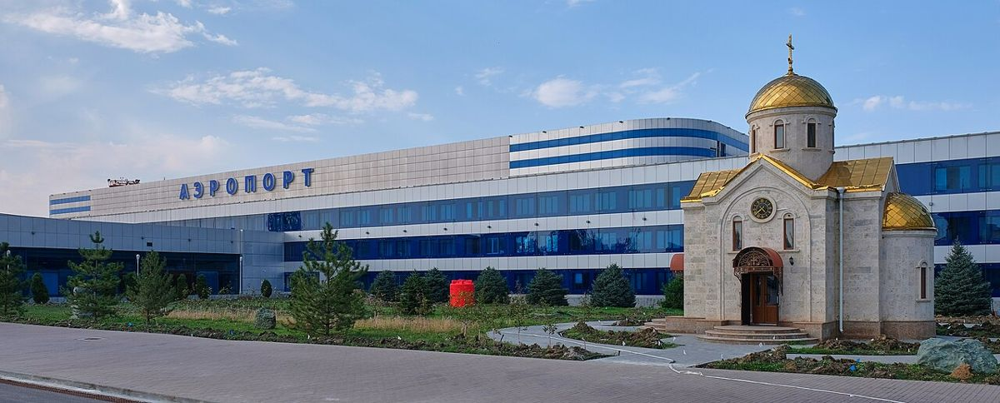
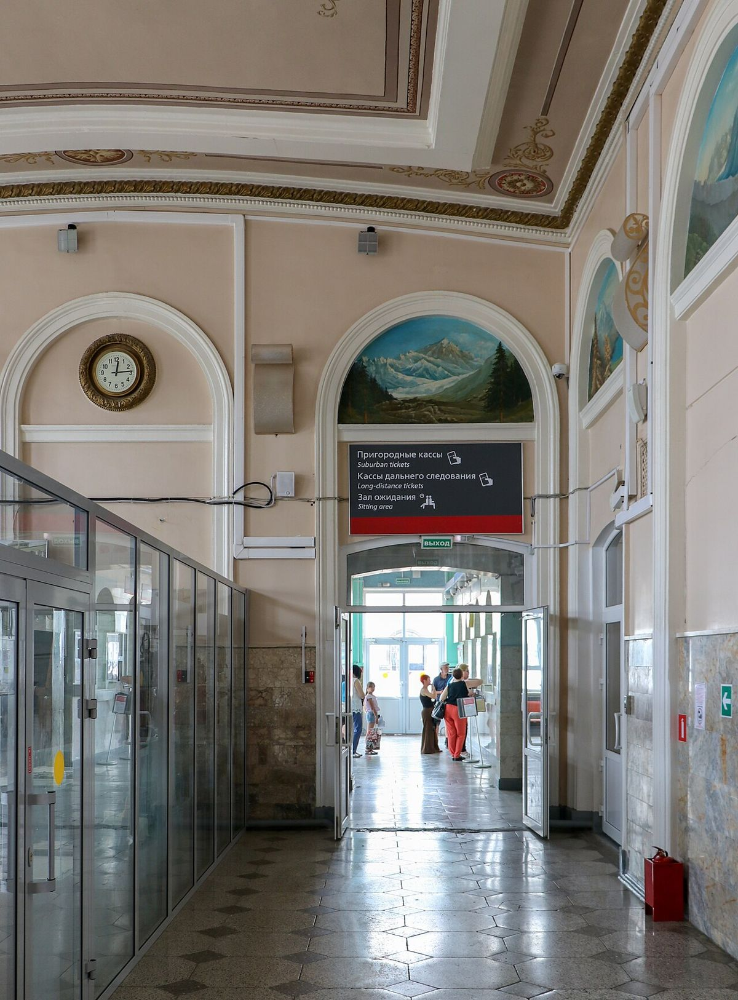

Пять городов на одной ветке: как добраться до КМВ и передвигаться между курортами
Кавказские Минеральные Воды на карте выглядят как один регион, но на деле это цепочка городов вдоль железной дороги: Минеральные Воды, Пятигорск, Ессентуки, Кисловодск и Железноводск чуть в стороне. Расстояния маленькие, но тот, кто не знает местной логистики, легко потратит половину отпуска на ожидание такси.
Коротко: прилетайте в аэропорт Минеральные Воды или берите поезд до станции вашего курорта. Из аэропорта до санатория — такси, трансфер или электричка. Между Пятигорском, Ессентуками и Кисловодском удобнее всего ездить на электричке, в Железноводск — на автобусе или такси.

Как приехать
Самолётом. Главные воздушные ворота региона — аэропорт Минеральные Воды. Он расположен в городе с тем же названием, и это важно запомнить: город Минеральные Воды — транспортный узел, а не курорт. Из аэропорта до санаториев едут на такси, трансфере, автобусе или электричке.
Поездом. Поезда дальнего следования идут до Минеральных Вод, а многие — дальше, до Пятигорска и Кисловодска. В Ессентуках они тоже часто останавливаются. Если ваш курорт — Кисловодск, ищите поезд до конечной, чтобы не пересаживаться с чемоданами.
На машине. Через Минеральные Воды проходит трасса «Кавказ», от неё к курортам ведут хорошие дороги. Своя машина удобна для поездок в горы, но в центрах курортов парковка ограничена, а многие места доступны только пешком. Перед бронированием стоит уточнить, есть ли у санатория парковка.
Как передвигаться между городами
Основной транспорт региона — пригородные электрички. Они идут по линии Минеральные Воды — Кисловодск, останавливаясь в Пятигорске и Ессентуках. Железноводск стоит на ответвлении от станции Бештау, поэтому туда электричек меньше и ехать с пересадкой не всегда удобно.
Электричка хороша тем, что не стоит в пробках и привозит прямо в центр. Вокзалы Кисловодска и Ессентуков — в шаге от курортных парков. Расписание проверьте заранее: вечером поезда ходят реже.
Между городами курсируют автобусы и маршрутки — они быстрее электрички на коротких дистанциях и отправляются чаще. Такси работает везде, но в пик сезона и в праздники ждать машину приходится дольше.
Внутри Пятигорска стоит попробовать трамвай: он ходит здесь с 1903 года и связывает центр с вокзалом и спальными районами. В остальных городах курортная часть компактна, и большинство расстояний проходятся пешком.

Что стоит учесть
- Багаж и процедуры несовместимы. Если в день приезда уже назначен приём, лучше, чтобы вас встретили. Трансфер «аэропорт — санаторий» есть не везде, а там, где есть, бывает включён в стоимость или оплачивается отдельно.
- Однодневные поездки — по самочувствию. Экскурсия в соседний город после радоновой ванны или грязевых аппликаций может оказаться лишней нагрузкой.
- Расстояния обманчивы. Из аэропорта до Железноводска ехать ближе всего, до Кисловодска — дольше всего. Если важно сократить дорогу, это стоит учесть при выборе курорта.
Кто встретит
Для пожилых людей, семей с детьми и всех, кто прилетает поздно вечером, трансфер — уже не удобство, а необходимость. Санатории, которые встречают гостей в аэропорту или на вокзале, удобно искать заранее. На Курортеке это можно увидеть в описании санатория вместе с ценами на 2026–2027 годы.
Через несколько дней местная логистика становится привычной: утром — бювет, днём — электричка в соседний город, вечером — обратно, пока не стемнело. Регион небольшой, и это его главное транспортное преимущество.